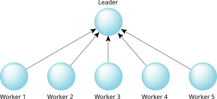

Now we'll consider a few examples of each method.
Filesystems, serial ports, consoles, and sound cards all use the client/server model. A C language application program takes on the role of the client and sends requests to these servers. The servers perform whatever work was specified, and reply with the answer.
Some of these traditional client/server
servers
may in fact actually be reply-driven (server/subserver) servers!
This is because, to the ultimate client, they appear as a standard
server, even though the server itself uses server/subserver
methods to get the work done.
What I mean by that is, the client still sends a message to what it thinks
is the service providing process.
What actually happens is that the service providing process
simply delegates the client's work to a different process (the subserver).
One of the more popular reply-driven programs is a fractal graphics program distributed over the network. The leading program divides the screen into several areas. It may divide into 64 regions, for example. At startup, the leading program is given a list of nodes that can participate in this activity. The leading program starts up worker (subserver) programs, one on each of the nodes, and then waits for the worker programs to send to the leader.
The leader then repeatedly picks unfilled
regions (of the 64 on screen) and delegates the
fractal computation work to the worker program on another node by replying to it. When the
worker program has completed the calculations, it sends the results back to the leader,
which displays the result on the screen.
Since the worker program sent to the leader, it's now up to the leader to again reply with more work. The leader continues doing this until all 64 areas on the screen have been filled.
Because the leading program is delegating work to worker programs, the leading program can't afford to become blocked on any one program! In a traditional send-driven approach, you'd expect the leader to create a program and then send to it. Unfortunately, the leading program wouldn't be replied to until the worker program was done, meaning that the leading program couldn't send simultaneously to another worker program, effectively negating the advantages of having multiple worker nodes.

The solution to this problem is to have the worker programs start up, and ask the leading program if there's any work to do by sending it a message. Once again, we've used the direction of the arrows in the diagram to indicate the direction of the send. Now the worker programs are waiting for the leader to reply. When something tells the leading program to do some work, it replies to one or more of the workers, which causes them to go off and do the work. This lets the workers go about their business; the leading program can still respond to new requests (it's not blocked waiting for a reply from one of the workers).
Multithreaded servers are indistinguishable from single-threaded servers
from the client's point of view.
In fact, the designer of a server can just turn on
multithreading
by starting another thread.
In any event, the server can still make use of multiple CPUs in an SMP
configuration, even if it is servicing only one client.
What does that mean?
Let's revisit the fractal graphics example.
When a subserver gets a request from the server to compute,
there's
absolutely nothing stopping the subserver from starting up multiple threads on
multiple CPUs to service the one request.
In fact, to make the application scale better across networks that have some SMP
boxes and some single-CPU boxes, the server and subserver can initially exchange
a message whereby the subserver tells the server how many CPUs it has—this
lets it know how many requests it can service simultaneously.
The server would then queue up more requests for SMP boxes, allowing the SMP
boxes to do more work than single-CPU boxes.